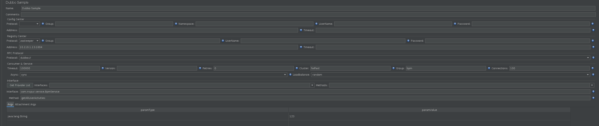

Jmeter
Contents
[[toc]]
Designed to load test functional behavior and measure performance
基础安装
- 官网
- 下载地址
1 2wget https://dlcdn.apache.org//jmeter/binaries/apache-jmeter-5.4.2.tgz tar zxf apache-jmeter-5.4.2.tgz - 运行
1./bin/jmeter
使用
新建
- 新建一个配置，保存
Test Plan>Add>Threads(Users)>Thread Group- 线程数：代表用户数
- Ramp-up period：请求间隔时间
- Loop Count：循环多少次
Thread Group>Add>Sampler>HTTP Request
Test Plan>Add>Listner>Aggregate Report- Average:平均响应时间，单位ms
调用dubbo接口
https://github.com/thubbo/jmeter-plugins-for-apache-dubbo/wiki/%E7%94%A8%E6%88%B7%E6%8C%87%E5%8D%97
当使用zk，address填入zk地址（集群地址使用",“分隔）,使用dubbo直连，address填写直连地址和服务端口
- timeout：服务方法调用超时时间(毫秒)
- version：服务版本，与服务提供者的版本一致
- retries：远程服务调用重试次数，不包括第一次调用，不需要重试请设为0
- cluster：集群方式，可选：failover/failfast/failsafe/failback/forking
- group: 服务分组，当一个接口有多个实现，可以用分组区分，必需和服务提供方一致
- 接口需要填写类型完全名称，含包名
- 参数支持任何类型，包装类直接使用java.lang下的包装类，小类型使用：int、float、shot、double、long、byte、boolean、char，自定义类使用类完全名称。
- 参数值，基础包装类和基础小类型直接使用值，例如：int为1，boolean为true等，自定义类与List或者Map等使用json格式数据。
更多dubbo参数查看官方文档：http://dubbo.apache.org/books/dubbo-user-book/references/xml/dubbo-reference.html

返回为null
超过最大线程。
在jmeter.properties文件中修改配置
|
|
在user.properties文件中追加配置
|
|
Parameter Comparison Table
| Java类型 | paramType | paramValue |
|---|---|---|
| int | int | 1 |
| int[] | int[] | [1, 2] |
| double | double | 1.2 |
| double[] | double[] | [1.2, 1.3] |
| short | short | 1 |
| short[] | short[] | [1, 2] |
| float | float | 1.2 |
| float[] | float[] | [1.2, 1.3] |
| long | long | 1 |
| long[] | long[] | [1, 2] |
| byte | byte | 字节 |
| byte[] | byte[] | 字节 |
| boolean | boolean | true false |
| boolean[] | boolean[] | [true, false] |
| char | char | A，如果字符过长取值为：“STR”.charAt(0) |
| char[] | char[] | [A, B] |
| java.lang.String | java.lang.String String string | “foo” foo |
| java.lang.String[] | java.lang.String[] String[] string[] | [“foo1”, “foo2”] |
| java.lang.Integer | java.lang.Integer Integer integer | 1 |
| java.lang.Integer[] | java.lang.Integer[] Integer[] integer[] | [1, 2] |
| java.lang.Double | java.lang.Double Double | 1.2 |
| java.lang.Double[] | java.lang.Double[] Double[] | [1.2, 1.3] |
| java.lang.Short | java.lang.Short Short | 1 |
| java.lang.Short[] | java.lang.Short[] Short[] | [1, 2] |
| java.lang.Long | java.lang.Long Long | 1 |
| java.lang.Long[] | java.lang.Long[] Long[] | [1, 2] |
| java.lang.Float | java.lang.Float Float | 1.2 |
| java.lang.Float[] | java.lang.Float[] Float[] | [1.2, 1.3] |
| java.lang.Byte | java.lang.Byte Byte | 字节 |
| java.lang.Byte[] | java.lang.Byte[] | Byte[] |
| java.lang.Boolean | java.lang.Boolean Boolean | true false |
| java.lang.Boolean[] | java.lang.Boolean[] Boolean[] | [true, false] |
| JavaBean | com.your.package.BeanName | {“att1”:“foo”,“att2”:“foo2”} |
| JavaBean[] | com.your.package.BeanName | [{“att1”:“foo”}, {“att1”:“foo2”}] |
| java.util.Map以及子类 | java.util.Map以及子类 | {“att1”:“foo”,“att2”:“foo2”} |
| java.util.Map<String,JavaBean> | java.util.Map | {“keyName”:{“att1”:“foo”}} |
| java.util.HashMap<Object,Object> | java.util.HashMap | {“keyName”:{“att1”:“foo”}} |
| java.util.Collection以及子类 | java.util.Collection以及子类 | [“a”,“b”] |
| java.util.List |
java.util.List | [“a”, “b”] |
| java.util.List |
java.util.List | [{“att1”:“foo1”}, {“att1”:“foo2”}] |
| java.util.List<Map<Object, JavaBean» | java.util.List | [{“keyName1”:{“att1”:“foo1”}}, {“keyName2”:{“att1”:“foo1”}}] |
| java.util.List |
java.util.List | [1, 2, 3] |
| java.util.ArrayList | java.util.ArrayList | [“foo” , 1, true] |
误选配置组后，无法清除
https://hub.fastgit.org/thubbo/jmeter-plugins-for-apache-dubbo/issues/142
在取样器 Dubbo Sample 的配置界面中的 Config Center / Protocol 下来选择框中如果选择了任意一项，则此项无法被清除，在后面的执行测试计划时，会由于我没有正确填写 Config Center 的 Address 项而发生报错，报错信息：
|
|
此Bug的关键不是为何会报错，而是在 Dubbo Sample / Config Center / Protocol 下拉选择框中，应当增加一个“无”选项。
我所使用的版本是 jmeter-plugins-dubbo-2.7.8-jar-with-dependencies.jar
Author Sloera
LastMod 2022-01-11 (083b1d0)